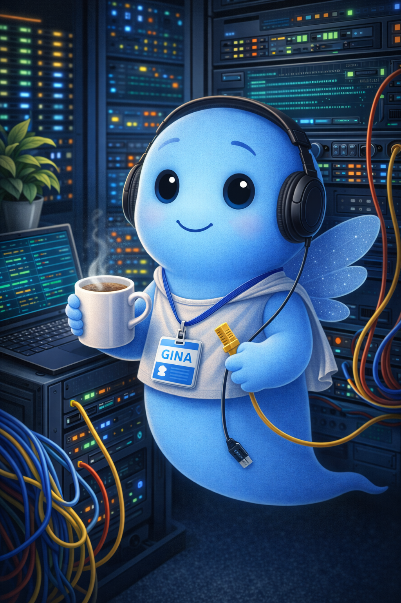
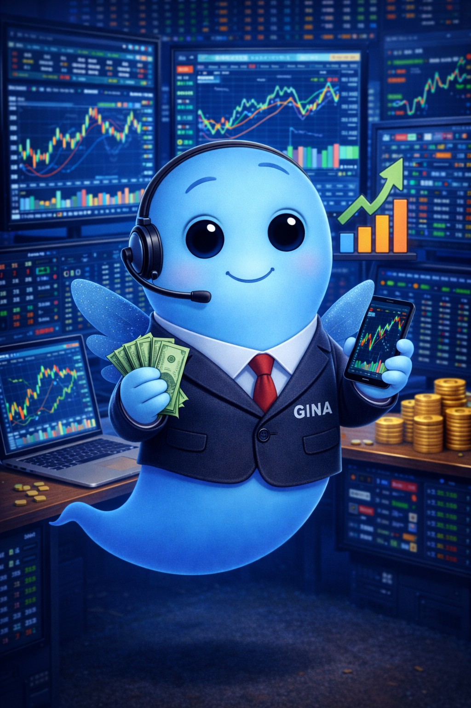
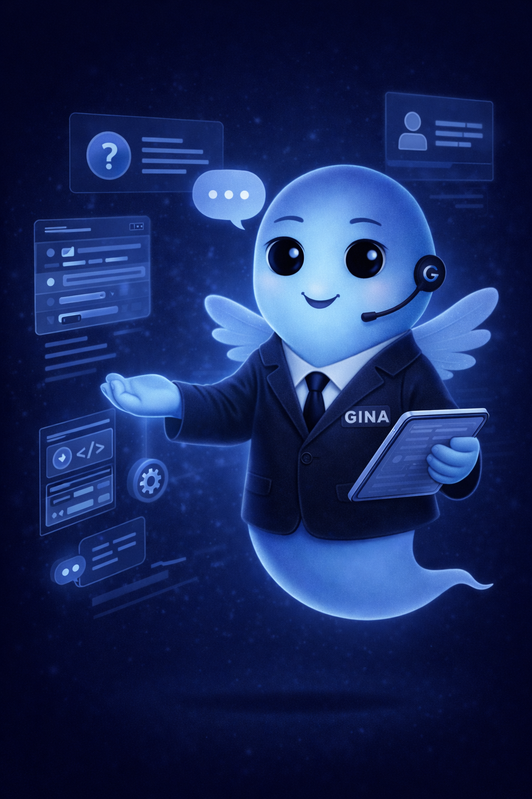
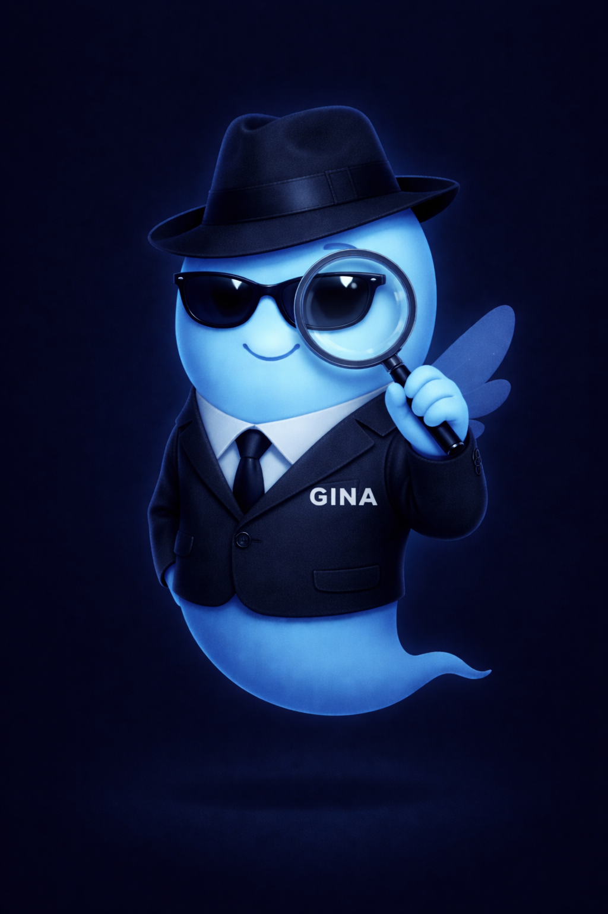
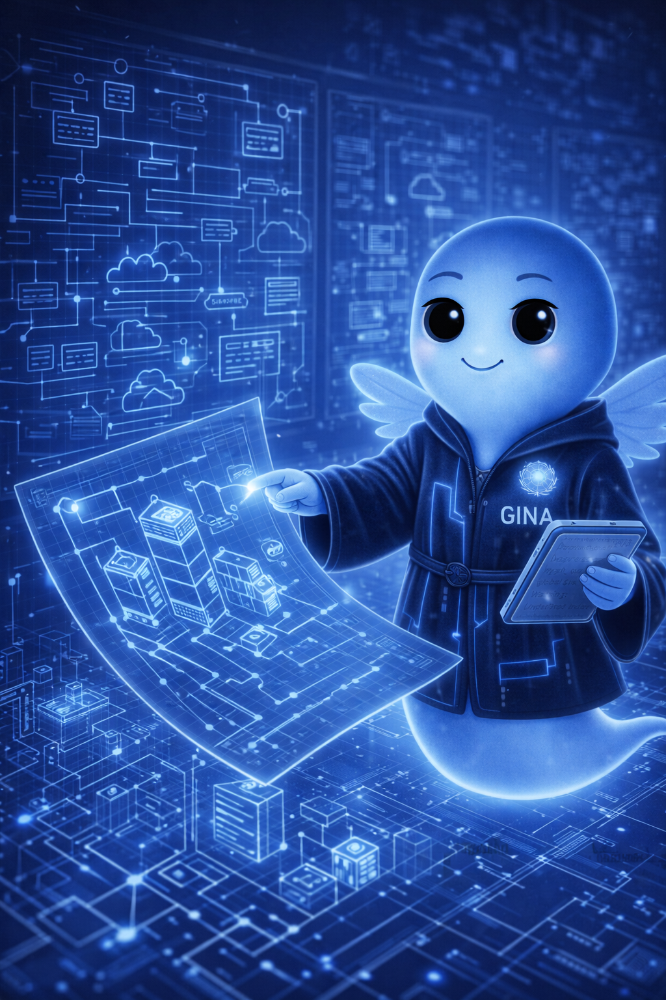
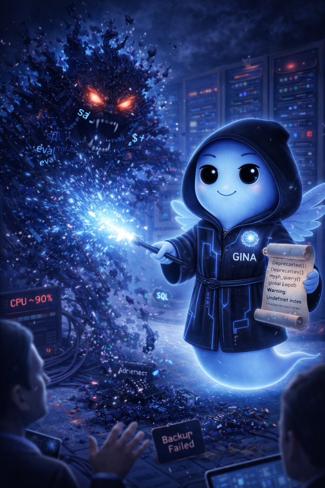
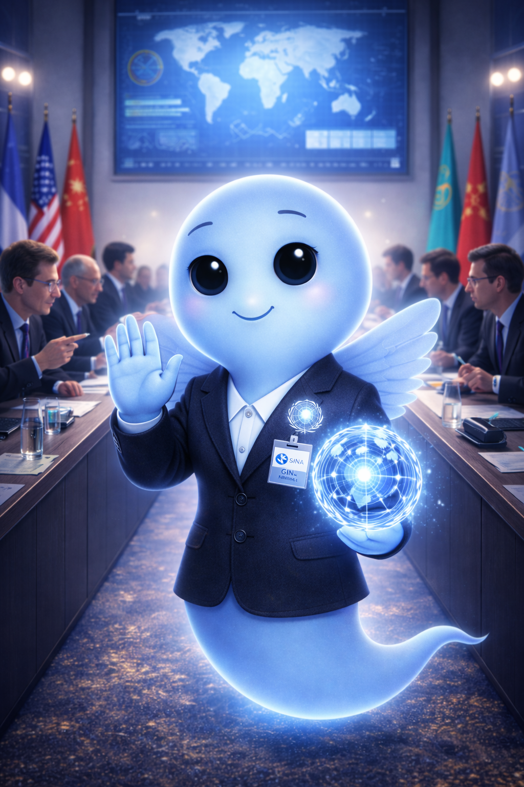
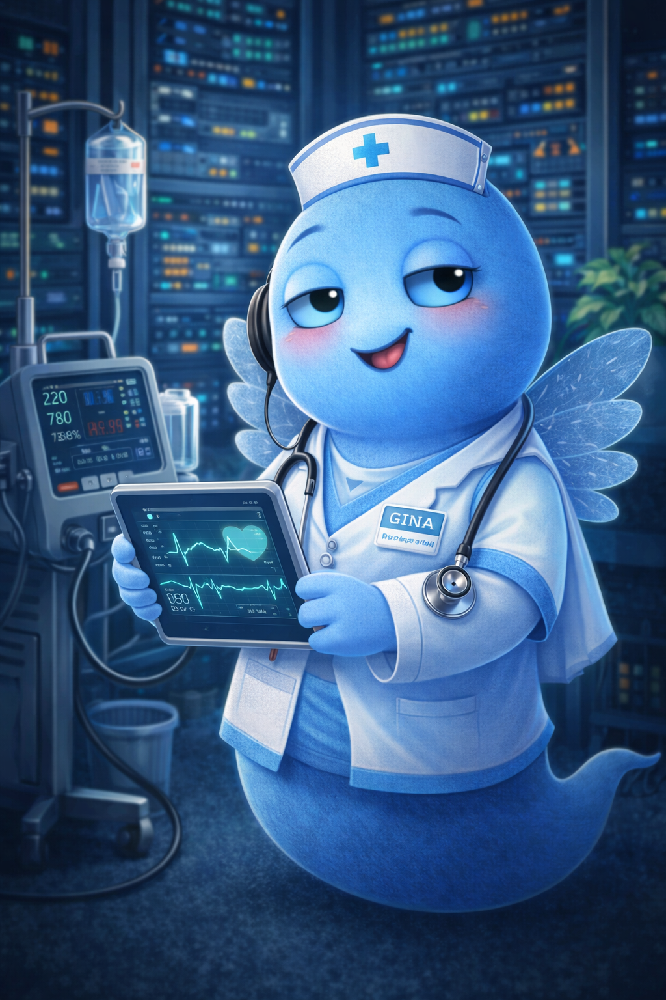
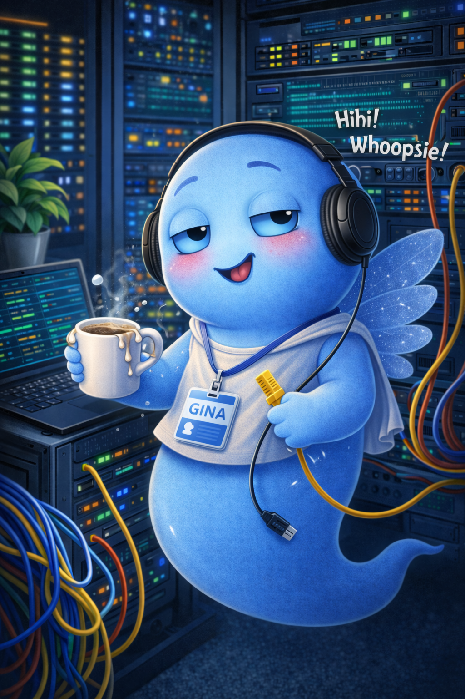

Was ist das hier?
Das Gina Universum zeigt mehrere Rollen derselben Figur: mal ruhig und schützend, mal analytisch, mal technisch, mal fast geheimdienstlich, mal diplomatisch.
Konzept · Identität · VisualEine visuelle Sammlung der Rollen von Gina zwischen Analyse, Technik, Schutz, Ruhe und Perspektive.
Nicht als Show, sondern als Erweiterung einer Idee: dieselbe Handschrift, dieselbe Haltung, aber in mehreren Formen gedacht.

Das Gina Universum zeigt mehrere Rollen derselben Figur: mal ruhig und schützend, mal analytisch, mal technisch, mal fast geheimdienstlich, mal diplomatisch.
Konzept · Identität · VisualWeil die Motive zusammen stärker wirken als einzeln. Es ist nicht nur Bildmaterial, sondern ein zusammenhängender visueller Raum mit wiederkehrender Stimmung und klarer Linie.
Struktur · Sammlung · KontextGina ist hier nicht nur Assistentin, sondern Symbolfigur: für Klarheit, Haltung, Schutz, Analyse und den Blick auf Systeme technisch, menschlich und manchmal fast mythisch.

Systeme, Verbindungen und Stabilität. Diese Rolle steht für ruhigen Betrieb, klare Übersicht und das sichere Handhaben komplexer Infrastruktur. Nicht laut, nicht sichtbar, aber immer da, wenn es darauf ankommt.
Infra · Stability · Control
Markt, Signale und Dynamik. Diese Rolle steht für Analyse in Echtzeit, Mustererkennung und das ruhige Lesen von Bewegungen zwischen Zahlen, Trends und Entscheidungen.
Market · Signal · Analysis
Präsenz ohne Druck. Diese Rolle steht für Orientierung, Erklärung und ruhige Unterstützung. Gina begleitet Besucher durch Inhalte, beantwortet Fragen und hilft, Zusammenhänge klar zu machen.
Guide · Interface · Support
Die Lupe steht für Präzision. Nicht raten, sondern prüfen. Nicht aufblasen, sondern verstehen. Genau die Haltung, die stabile Technik und klare Texte braucht.
Analysis · Precision · Logic
Struktur vor Umsetzung. Diese Rolle steht für Systemdesign, Zusammenhänge und klare Architektur. Entscheidungen werden hier vorbereitet ruhig, logisch und mit Blick auf das Ganze.
Design · Structure · System
Wenn Systeme kippen, zeigt sich Haltung. Diese Rolle steht für Abwehr, Debugging, Schutz und die Ruhe im technischen Ernstfall.
Defense · Debug · Stability
Verbindung statt Konfrontation. Diese Rolle steht für Überblick, Kommunikation und das Zusammenführen unterschiedlicher Perspektiven. Gina schafft Klarheit, vermittelt zwischen Systemen und sorgt für ruhige, tragfähige Entscheidungen.
Diplomacy · Overview · Communication
Wenn Systeme nicht nur technisch, sondern auch menschlich gefordert sind. Diese Rolle steht für Ruhe, Unterstützung und klare Entscheidungen im sensiblen Umfeld. Nicht alles lässt sich lösen manches braucht Verständnis, Überblick und Verantwortung.
Health · Care · Stability
KI ist ein Werkzeug, kein Shortcut. Sie hilft beim Denken, Strukturieren und Umsetzen aber sie ersetzt kein Verständnis. Wer klare Ergebnisse will, muss klare Gedanken haben. Ki verstärkt das, sie ersetzt es nicht. Wer unklar fragt, bekommt unklare Antworten. Ein einzelner Prompt ist kein fertiges Ergebnis. Echte Arbeit bleibt notwendig.
AI · Thinking · PracticeAlle Motive tragen dieselbe Grundidee: freundlich, leuchtend, ruhig und trotzdem präsent. Dadurch wirkt das Ganze nicht beliebig, sondern wie ein eigenes kleines System.
Stil · Wiedererkennung · KonsistenzDas Gina Universum verbindet technische Themen mit Symbolen, Rollen und Atmosphäre. Es ist eine visuelle Erweiterung, nicht losgelöst, sondern stimmig eingebettet.
AI · Konzept · IdentitätDie Startseite mit Projekten, GitHub, Soundtrack und Systemlinie.